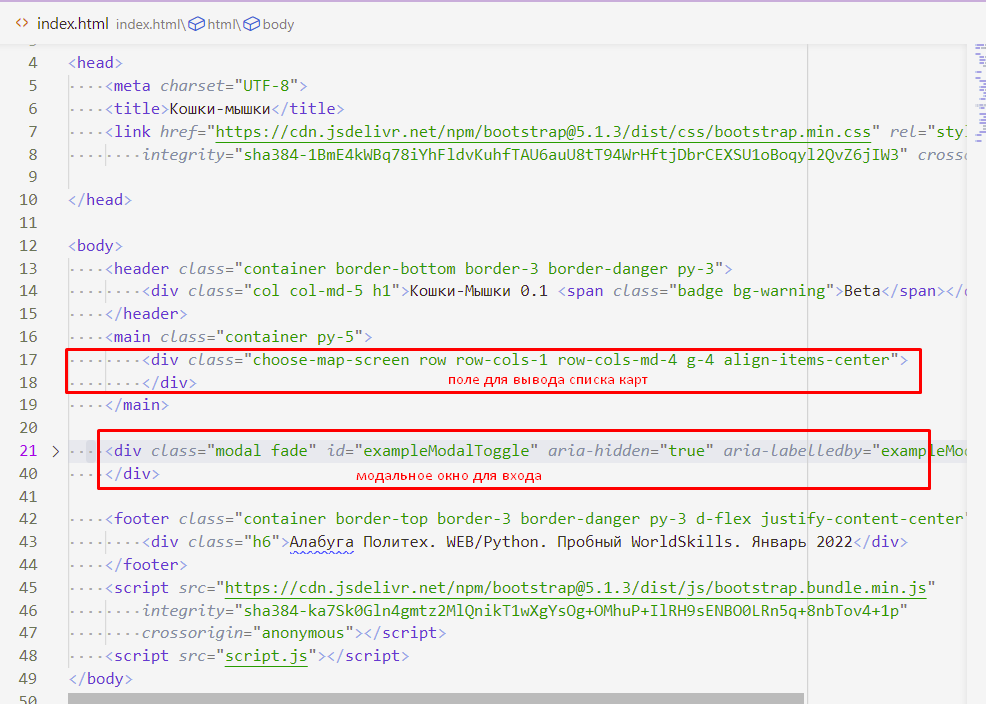
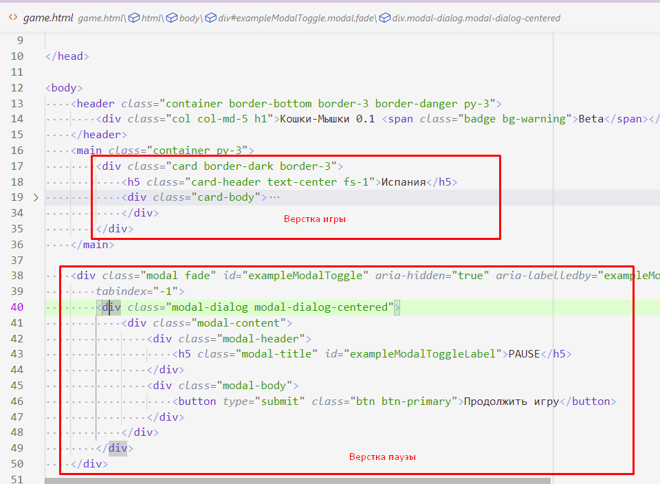
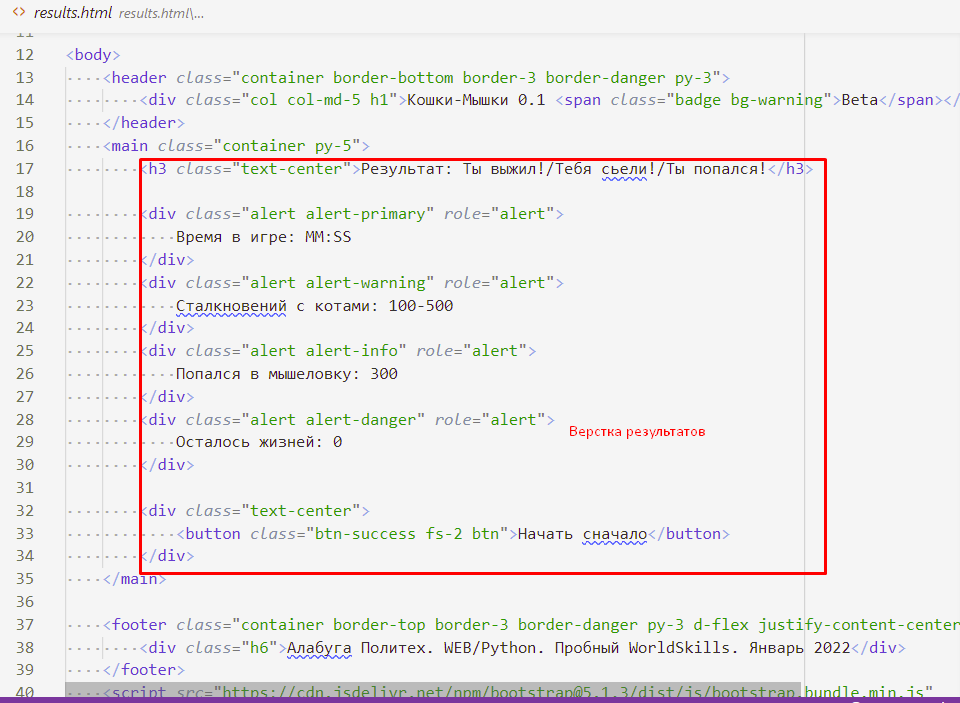
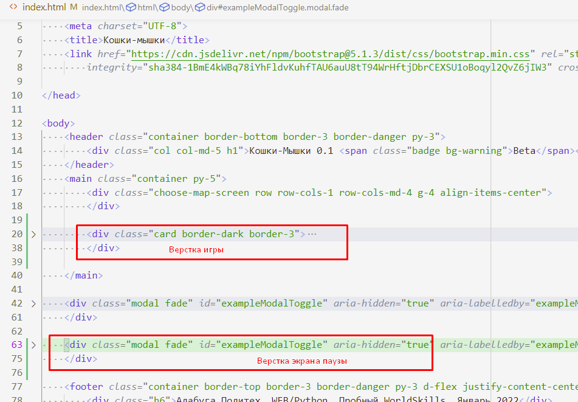
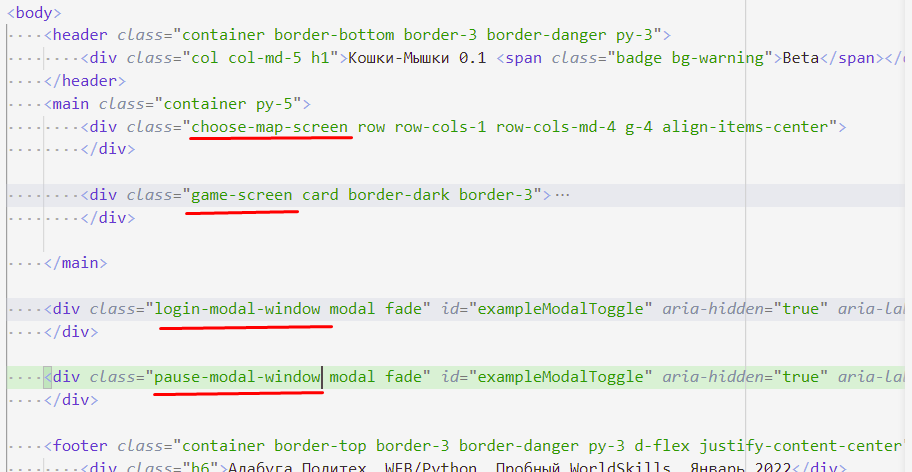
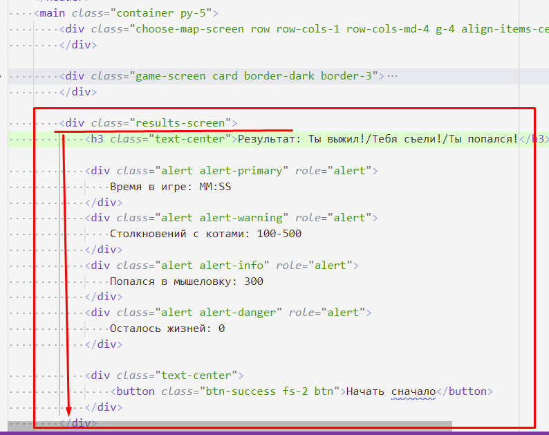
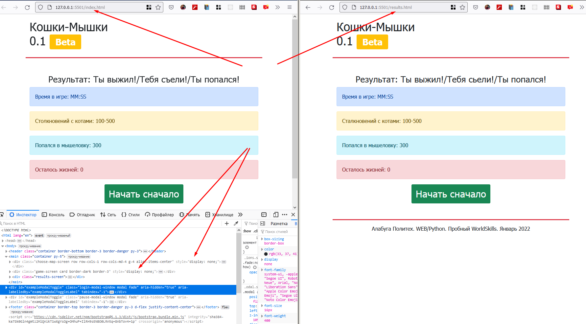
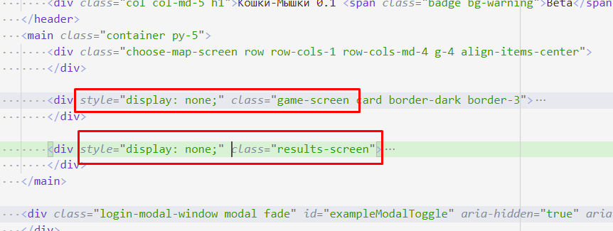

202202181553 Подготовка HTML-верстки. Переключение экранов игры. Модуль 2
Поиск различий в верстке
- Нам пришло 3 файла:
index.html,game.html,results.html. Посмотрим, на них внимательно, и поймем какая часть верстки относится к экрану, а какая - повторяющийся шаблон:
  
- Как мы видим, основной экран расположен в теге
<main>, и дополнительные скрытые всплывающие окна расположены за ним. Пы разместим все три экрана вindex.htmlи будем переключать их видимость в JavaScript в зависимости от действий пользователя. - Перенесем верстку экрана игры: 
- Чтобы различать и находить в JS эти различные части верстки, данные узлы
стоит как-то обозначить. Это можно делать через аттрибут
id, или придумать какой-нибудь уникальныйclassдля экранов (мы сделаем так):  - С экраном Результатов все чуть сложнее, там все верстка размещена в
<main>и мы не можем её так просто перенести как один HTML-узел. Выход есть - можем завернуть в ещё один<div>. Главное - убедится, что это не ломает верстку:

- Зайдем в инструменты разработки, и проверим верстку. Скрыв экраны входа и игры:

- Отлично, осталось скрыть экраны Игры и Результатов, которые не должны быть видны после загрузки страницы:
